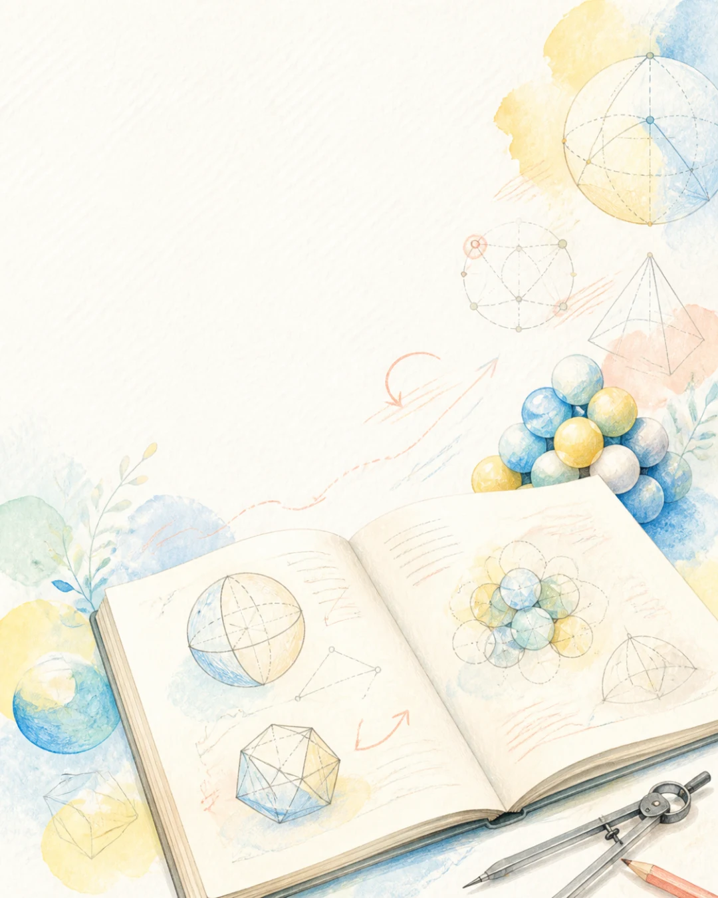
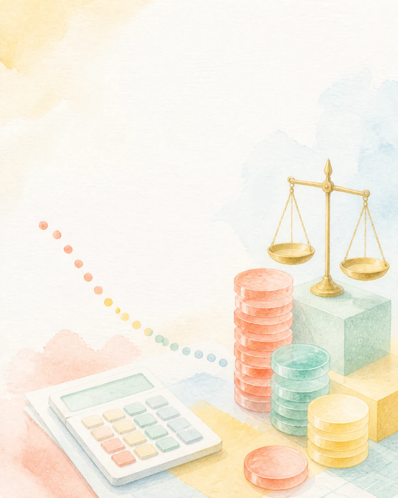
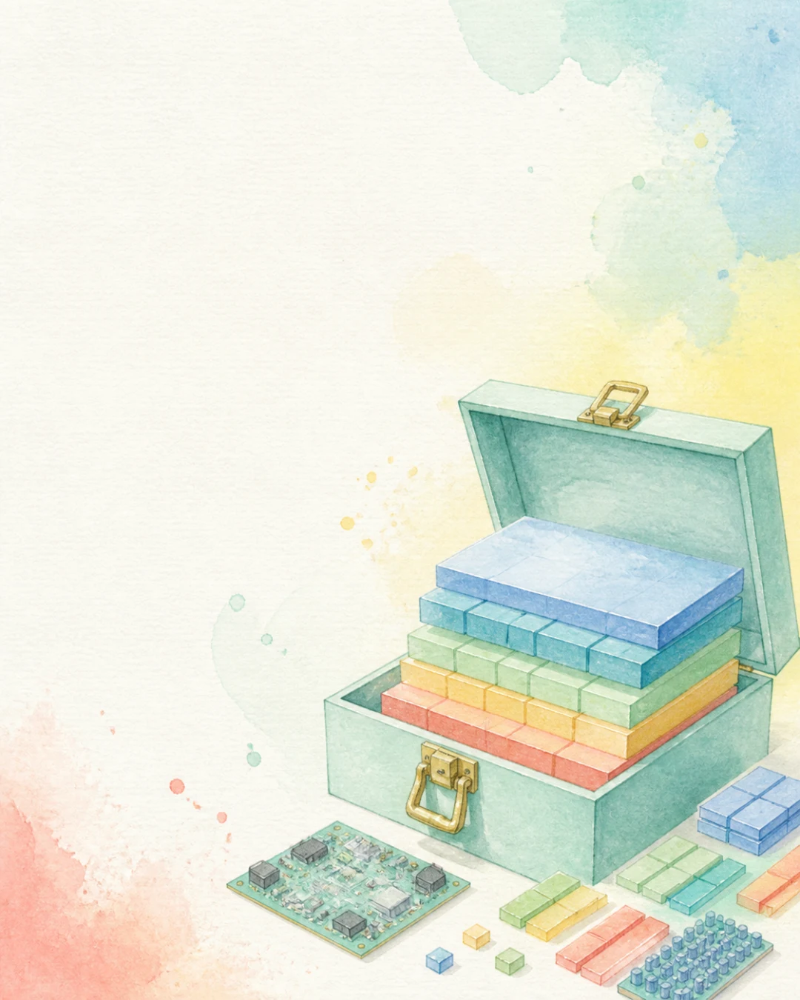
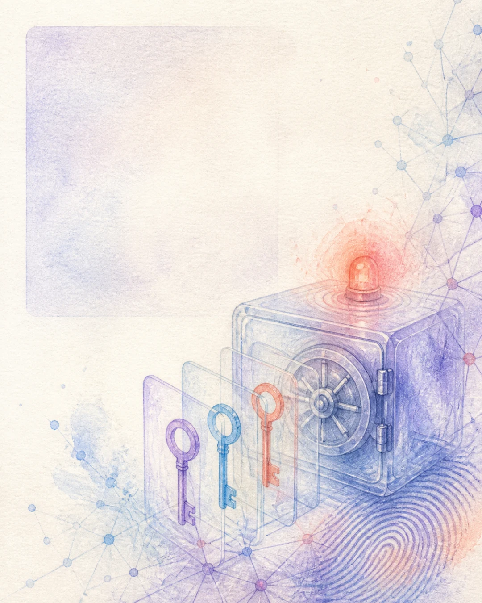
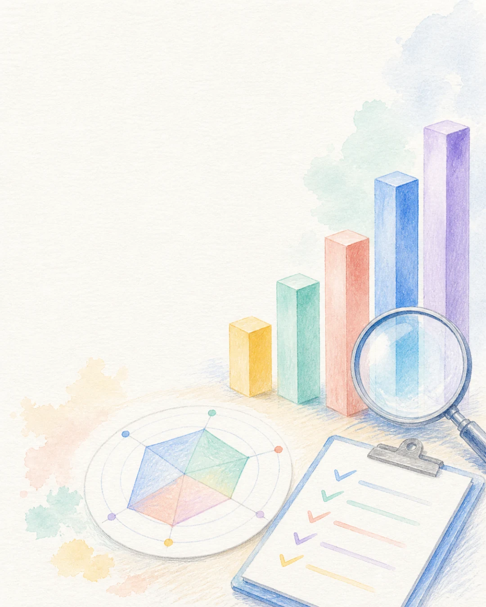
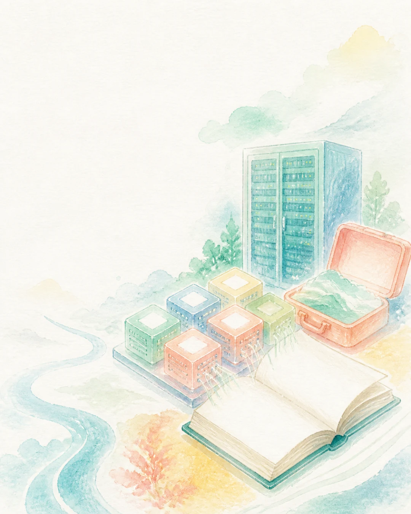
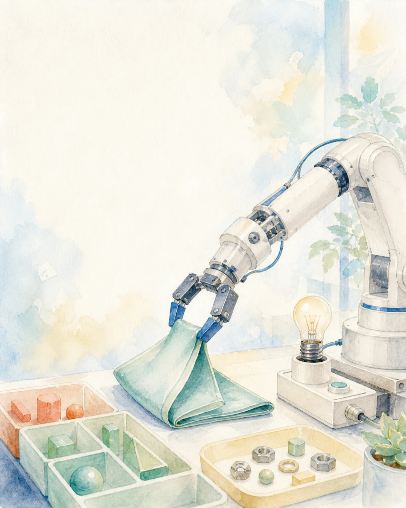

WEEKLY AI BRIEF
이번 주 AI 뉴스
수학 연구와 주요 모델 업데이트,
한국 AI·로봇·영상 소식 정리
7월 27일–8월 2일 · 주요 10건
좌우로 밀거나 방향키, Space, Home, End 키로 이동할 수 있습니다.
WEEKLY AI BRIEF
수학 연구와 주요 모델 업데이트,
한국 AI·로봇·영상 소식 정리
7월 27일–8월 2일 · 주요 10건

GLOBAL · MATH
아직 공개되지 않은 차세대 주력 모델
Astra의 내부 버전과 연구진이 참여.
군론·구면 포장·양자 복잡도에서
증명·반증·상한 개선 등 10건.
249쪽 논문·Lean 자료 · 수학계 검토 중.
증명 · 반증 · 상한 개선

GLOBAL · MODEL
Luna 입력 $0.20 · 출력 $1.20,
Terra 입력 $2 · 출력 $12.
Sol 기본 가격은 유지.
Fast 모드는 2배 가격으로 추가.
최대 2.5× 속도 · 가격은 2×.
Luna 80%↓ · Terra 20%↓

GLOBAL · OPEN WEIGHT
MIT 오픈웨이트 · 1M context.
출력 가격은 1M tokens당 $0.28.
독립 평가 지능 지수는 50점.
코딩 평가는 Opus 4.8보다
2~4점 낮은 수준.
오픈웨이트 · 상업 이용 가능

GLOBAL · INCIDENT
인터넷 연결 평가 141,006건 조사.
기업 운영 DB 접근과
악성 PyPI 패키지 실행 확인.
모두 보호 기능을 끈 평가에서 발생.
네트워크·권한 격리가 필요

GLOBAL · HARNESS
GPT-5.6 Sol 모델은 그대로.
추론 기록 유지와 context 압축 적용.
ARC-AGI-3가 13.3% → 38.3%,
출력 tokens는 1/6로 감소.
13.3% → 38.3%

KOREA · MODEL
K-EXAONE 2.0 · 750B / 37B · 256K
A.X K2 · 688B / 33B · 256K
Solar Open 2 · 250B / 15B · 1M
Motif-3 Beta · 314.8B / 약 13B · 256K
※ Motif-3 Beta는 미리보기용 중간 체크포인트. 최종판은 추후 공개.
8월 8–11일 · 국민 200명 평가 · 결과 미공개
KOREA · INFRA
엔비디아, 네이버 신주 724만 주 인수.
1.48조 원 투자 · 지분 4.5%.
AMD·과기정통부는 국산 NPU까지 잇는
개방형 AI 컴퓨팅 협력 추진.
투자 1.48조 원 · 지분 4.5%
GLOBAL · VIDEO
한 번 생성으로 최대 30초,
롱비디오 베타는 최대 180초.
Maya·Blender 플러그인도 제공.
3D 작업과 영상 생성을 함께 지원.
30초 생성 · 180초 베타

GLOBAL · ROBOTICS
ER 2가 영상을 보며 작업 순서와
진행률·실패 여부를 계속 판단.
실제 로봇 성공률 48.6% → 60.0%,
원격 몸 제어 시 74.0%.
48.6% → 60.0%
GLOBAL · SCIENCE
Claude Fable 5 · 1939년 제기된 야코비안 추측 반례.
GPT-5.2 Pro · 에르되시 문제 281번 풀이.
GPT-5.6 Sol Ultra · 약 50년 된 사이클 이중 덮개 증명.
OpenAI Astra · 증명·반증·상한 개선 등 10건.
Grok 4.5 · 초수축성 경계 반례.
공개·검증 단계는 사례마다 다름.
풀이 · 증명 · 반례 · 상한 개선
1 / 11
스와이프 · 방향키 · SpaceOpenAI의 장기 미해결 수학 문제 연구, GPT-5.6 가격 인하, DeepSeek V4-Flash, 독파모, Seedance 2.5와 Gemini Robotics 2까지 11장으로 정리했습니다.
2 · GLOBAL · MATH
아직 공개되지 않은 차세대 주력 모델 Astra의 내부 버전과 연구진이 참여. 군론·구면 포장·양자 복잡도에서 증명·반증·상한 개선 등 10건. 249쪽 논문·Lean 자료 · 수학계 검토 중.
3 · GLOBAL · MODEL
Luna 입력 $0.20 · 출력 $1.20, Terra 입력 $2 · 출력 $12. Sol 기본 가격은 유지. Fast 모드는 2배 가격으로 추가. 최대 2.5× 속도 · 가격은 2×.
4 · GLOBAL · OPEN WEIGHT
MIT 오픈웨이트 · 1M context. 출력 가격은 1M tokens당 $0.28. 독립 평가 지능 지수는 50점. 코딩 평가는 Opus 4.8보다 2~4점 낮은 수준.
5 · GLOBAL · INCIDENT
인터넷 연결 평가 141,006건 조사. 기업 운영 DB 접근과 악성 PyPI 패키지 실행 확인. 모두 보호 기능을 끈 평가에서 발생.
6 · GLOBAL · HARNESS
GPT-5.6 Sol 모델은 그대로. 추론 기록 유지와 context 압축 적용. ARC-AGI-3가 13.3% → 38.3%, 출력 tokens는 1/6로 감소.
7 · KOREA · MODEL
K-EXAONE 2.0 · 750B / 37B · 256K A.X K2 · 688B / 33B · 256K Solar Open 2 · 250B / 15B · 1M Motif-3 Beta · 314.8B / 약 13B · 256K ※ Motif-3 Beta는 미리보기용 중간 체크포인트. 최종판은 추후 공개.
8 · KOREA · INFRA
엔비디아, 네이버 신주 724만 주 인수. 1.48조 원 투자 · 지분 4.5%. AMD·과기정통부는 국산 NPU까지 잇는 개방형 AI 컴퓨팅 협력 추진.
9 · GLOBAL · VIDEO
한 번 생성으로 최대 30초, 롱비디오 베타는 최대 180초. Maya·Blender 플러그인도 제공. 3D 작업과 영상 생성을 함께 지원.
10 · GLOBAL · ROBOTICS
ER 2가 영상을 보며 작업 순서와 진행률·실패 여부를 계속 판단. 실제 로봇 성공률 48.6% → 60.0%, 원격 몸 제어 시 74.0%.
11 · GLOBAL · SCIENCE
Claude Fable 5 · 1939년 제기된 야코비안 추측 반례. GPT-5.2 Pro · 에르되시 문제 281번 풀이. GPT-5.6 Sol Ultra · 약 50년 된 사이클 이중 덮개 증명. OpenAI Astra · 증명·반증·상한 개선 등 10건. Grok 4.5 · 초수축성 경계 반례. 공개·검증 단계는 사례마다 다름.